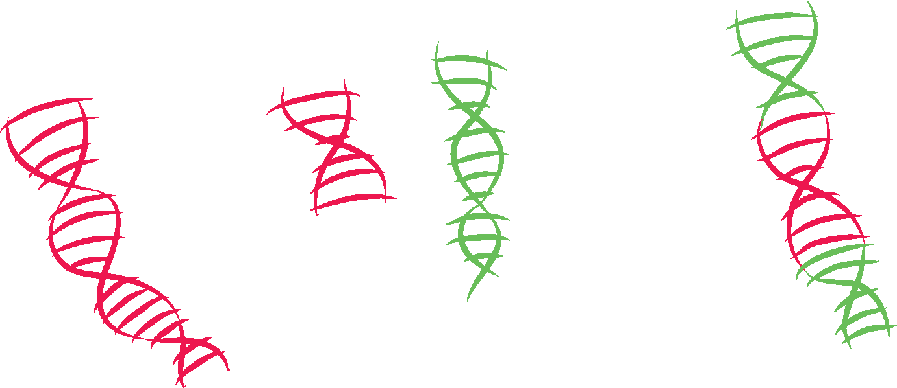

Organismos transgênicos são aqueles que adquiriram, pelo uso de técnicas modernas de Engenharia Genética, genes de outro(s) organismo(s).
Geralmente, busca-se com a produção de transgênicos obter um organismo mais resistente a determinada praga ou mais nutritivos, entre outras finalidades.

A produção de animais e plantas transgênicas, só é possível porque aprendemos a cortar, copiar, colar e combinar trechos de molécula de DNA de organismos diferentes.
